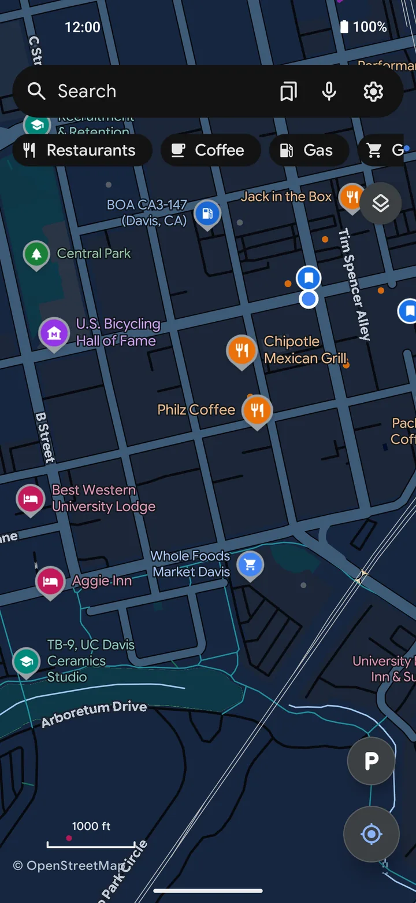
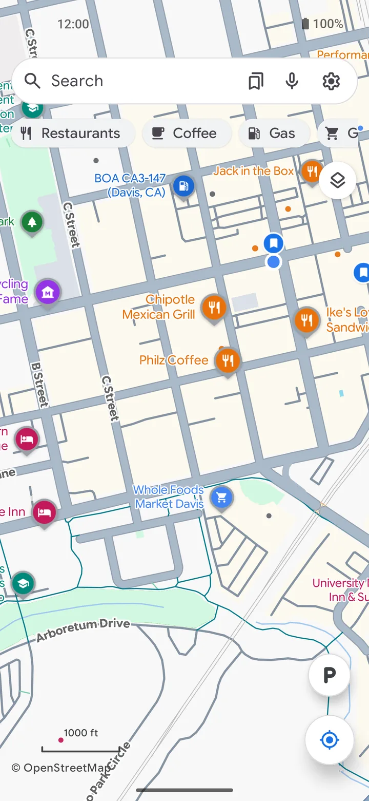
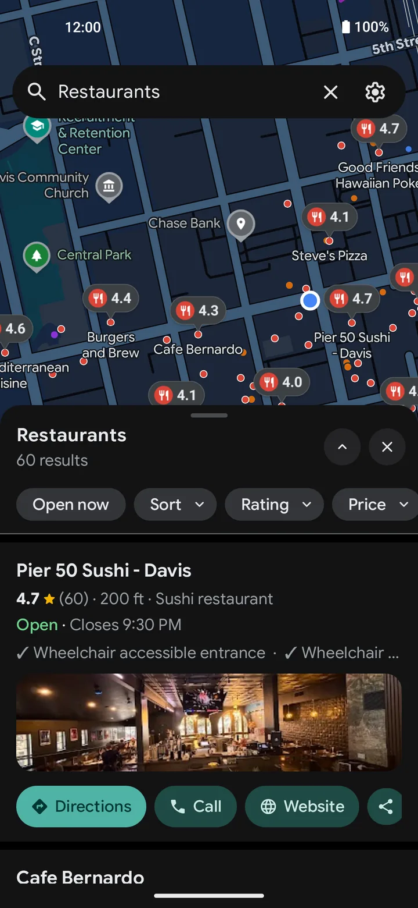
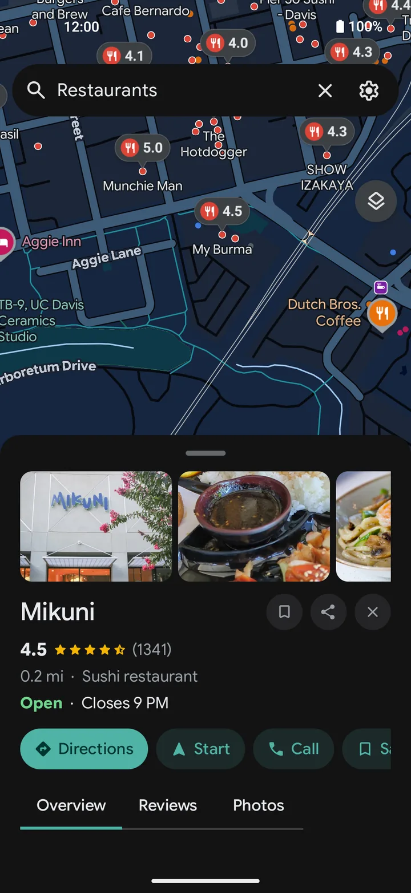
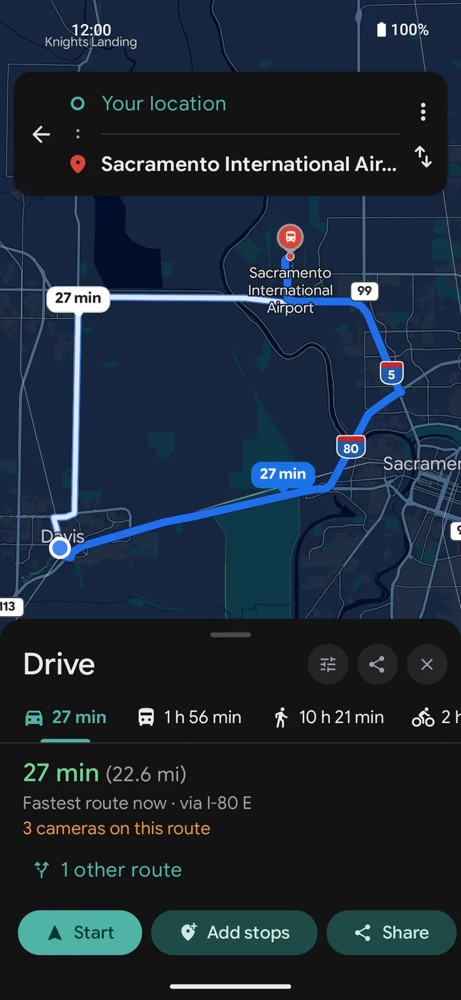
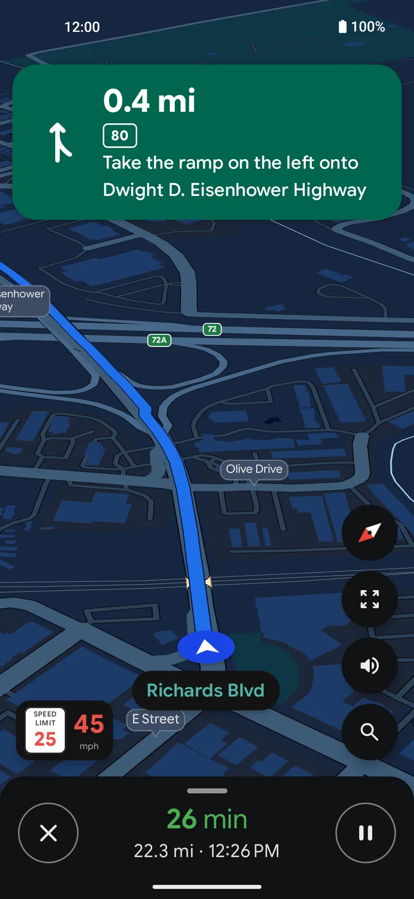
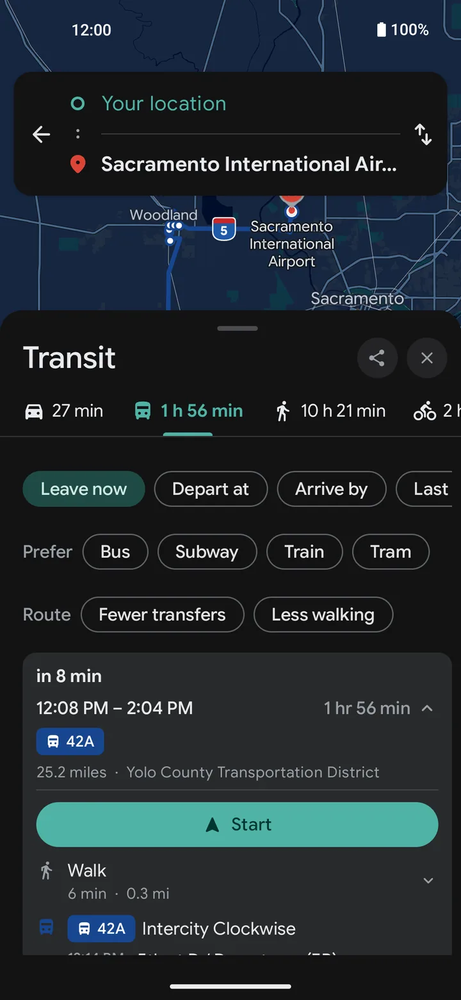
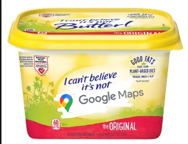

Writing about Vela?
Thank you. This page has the facts, the wording that is accurate, the pictures, and a few requests. It takes about three minutes to read.
The short version
One sentence:
Vela is a free, open-source maps and navigation app for Android that works without Google Play Services or a Google account.
One paragraph:
Vela is a free, open-source maps and navigation app for Android, built for phones without Google Play Services. The map and the places on it come from open data such as OpenStreetMap and Overture Maps. For the things open data does not have, like reviews, opening hours and traffic-aware routes, the phone looks them up on Google's public website the way a logged-out browser would, with no account and no API key. Nothing you save leaves the device. It is in beta and maintained by one developer.
- Name
- Vela Maps, or just Vela. Named for the constellation "the Sails".
- Platform
- Android 8 and newer. No iOS version.
- Price
- Free. No ads, no account, no paid tier.
- License
- GPLv3, source on GitHub
- Status
- Beta
- Started
- June 2026
- Who makes it
- One developer, who goes by PimpinPumpkin, with outside contributors and volunteer translators
- Languages
- 15
- Where to get it
- GitHub releases, Obtainium, or Vela's own F-Droid repository. Not on Google Play.
- Website
- velamaps.org
- Source
- github.com/PimpinPumpkin/Vela
Please get these right
Most of what gets written about Vela is fair. The same few things come out wrong, and they matter.
Accurate
- An open-source maps app that works without Google services
- Looks things up on Google like a logged-out browser
- The map and the places on it are open data
- What NewPipe is to YouTube, for maps
- In beta, made by one developer
Not accurate
- A Google Maps mod, crack or patched app
- A wrapper around the Google Maps website
- Free access to the Google Maps API
- A way to use your Google account privately
- Made by, approved by or connected to Google
- Made by a team or a company
- It contains no Google code. It is a native app that draws open map tiles. It uses no Google SDK, no Play Services and no API key.
- "Private" needs one sentence of care. Google does not get an account or a device ID. It does get an IP address and the search or place you asked about, as it would from any browser. The privacy page says exactly what is sent and when.
- It can run with no Google contact at all. One switch turns every Google request off, and downloaded regions work fully offline.
- It is beta. Please say so. People who install it expecting a finished product have a worse time than people who were told.
How it works, briefly
Three sources, each doing the part it is good at.
- The map and the places on it are open data: OpenStreetMap streets, tiles from OpenFreeMap, and places from Overture Maps and AllThePlaces, built into files in Vela's own repository.
- Turn-by-turn instructions come from open routers (OSRM and Valhalla), and offline routes are worked out on the phone from a downloaded region.
- Search, place details, driving routes and live traffic come from Google's public web pages. Each phone asks for itself, anonymously. There is no Vela server in between, so there is no central place where anyone's searches collect.
When Google changes a page and something stops working, the fix is a small signed file the app downloads on its own. Most breakages are repaired without an app update.
Questions that come up
How many people use it?
Vela has no telemetry, so nobody knows exactly. From public download counters, about ten thousand phones opened it in the second week of October 2026, up from about four thousand the week before. The repository passed 1,400 stars on GitHub that week, under four months after the first commit.
Is it written by AI?
Yes, largely. AI assistants write the code. One maintainer decides what gets built and how it should behave, and tests it on real phones, but does not review every line. The source is scanned automatically for insecure patterns and vulnerable libraries, and the security policy says what is checked and how to report a problem privately.
Does it work on a normal Android phone?
Yes. It was built for phones without Google services, such as GrapheneOS, but it installs on any Android 8 or newer device.
Who pays for it?
Nobody. There is no company and no funding. There is a tip jar.
What does not work?
Anything that needs a Google account or a server: your Google saved lists and Timeline, crowd-sourced police and crash reports, sharing your live location. The roadmap lists what will not be built and why.
Three requests
- Tell me before it goes out, if you can. A day of notice is enough. A large audience arriving at once means a wave of bug reports to one person, and it is much easier with warning.
- Send people to the GitHub page for downloads. Copies on other APK sites are not checked by anyone and fall behind.
- Send bug reports to the GitHub form, not to comments. A report with a version and steps gets fixed. A comment under a video does not reach anyone.
Contact. @PimpinPumpkin on GitHub.
Happy to answer questions in writing. Security problems go through the private report form on GitHub.
Coverage so far
- How-To Geek, October 2026: a hands-on review.
- Cybernews, October 2026: on the plate-camera layer.
- Sans dépendances, October 2026: a review and a video walkthrough, in French.
- alt43, October 2026: a visual guide, in Spanish.
- Le Alternative, August 2026: a review, in Italian.
Pictures
Free to use in coverage of Vela. Download the press kit (zip: logo, eleven full-size screenshots and a fact sheet), or click a picture for that file.



Map, dark

Map, light

Search

Place page

Directions

Navigation

Transit

The tubScreenshots show the project's test area. The logo is the two-tone sail on a teal square; please do not recolor it.